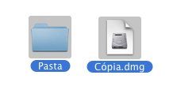
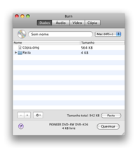
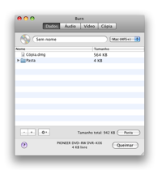
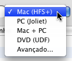

Queimando Discos de Dados:
Discos de dados são normalmente usados para
computadores. Existem diferentes tipos de discos de dados, todos com
seu próprio propósito. Burn pode criar os discos mais
comuns.
1 Selecionar alguns arquivos
Estes podem ser qualquer arquivo ou pasta.

2 Jogue eles na lista
Jogue os arquivos dentro da lista. Para usar uma única pasta
como layout jogue ela na aba Dados acima da lista.

 

3 Selecionar um sistema de arquivo
Selecione um sistema de arquivo:
Mac (HFS+):
Selecione este sistema de arquivo se você quer usar discos em
Macs somente. Windows não pode ler esse sistema de arquivo
PC (Joliet):
Este sistema de arquivo é mais comum para CDs e pode ser lido
por vários computadores. Ele também pode ser usado em
DVDs.
DVD (UDF):
Este sistema de arquivo é mais comum para DVDs. ele pode ser
lido por vários computadores mais modernos (isso inclui sistemas
Mac Os 9 e sistemas Windows 98). ele pode também ser usado em
CDs. (este item não esta disponível no Panther)
Mac + PC:
Este é um misto de um sistema de arquivo Mac + um sistema de
arquivo PC. ele pode ser lido em quase todos computadores, mas ele
mantém informações específicas Mac intactas
(como ícones e resource forks).
Avançado:
Uma combinação dos sistemas de arquivo mencionados acima.
Mas também ISO9660 (antigo sistema de arquivo PC), HFS Standard
(antigo sistema de arquivo Mac) e UDF / ISO 9660 no Panther.

4 Clicar em Queimar
Isso irá mostrar uma janela.

5 Selecionar
opções
Selecione opções para a sessão de
gravação. Para mais ajustes, veja as Preferências
sob o menu Burn.

6 Gravar o disco
Agora clique Queimar para gravar o disco.

7 Burn
vai gravar o disco
Enquanto grava o Burn irá mostrar uma janela com o estado da
gravação.